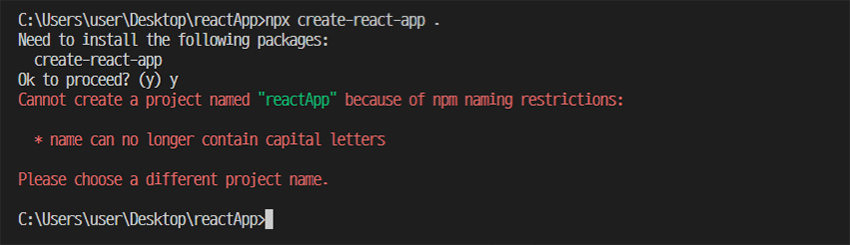
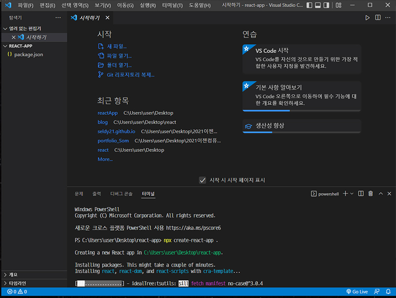
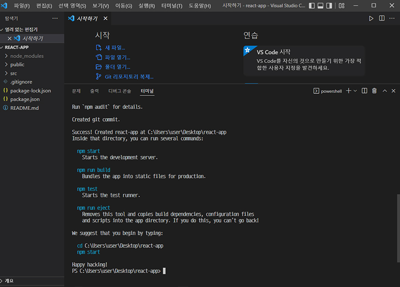
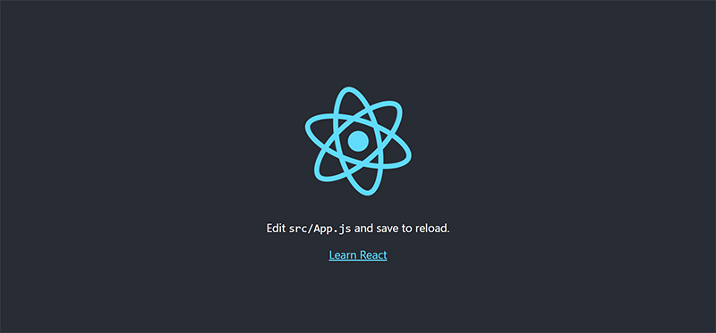

react 설치하기
2022-04-15
react를 다루기 위해 프로그램 설치는 필수. 이를 위해서는 node.js 파일을 꼭 설치해야 한다.
자, react에 발을 한 번 담가보자.
- vs code를 열고 새로운 폴더를 연다. 폴더명은 'react'를 피하도록 하는 것이 좋다. 그래서 reactApp으로 만들어서 명령어npx create-react-app .입력 했는데
-
- 게 뭐람...
- 
- 응~ 에러
- 그래도 찬찬히 읽어보니 폴더명에 대문자 쓰지 말라는 느낌적인 느낌인 듯.
- 코딩하다 보니 camelCase가 편하게 느껴져서 자주 쓰게 된다.
- 넵 프로젝트명을 바꾸겠습니다.
-
- 얌전히 폴더명 react-app으로 새로 만들었다.
- 
- 잘 진행되고 있는 중이다.
-
- 모든 과정이 끝나면 success가 뜬다.
- 
- 파란색으로 보이는 npm start, npm run build 등은 사용 가능한 명령어라고 한다. 그렇다면 npm start를 입력해본다.
-
- 웹 브라우저로 샘플 react app이 실행된다. 혹시 3000번 port가 이미 사용중이라면 다른 메시지가 뜨는데, y를 입력하면 자동으로 다른 port로 실행된다.
- 